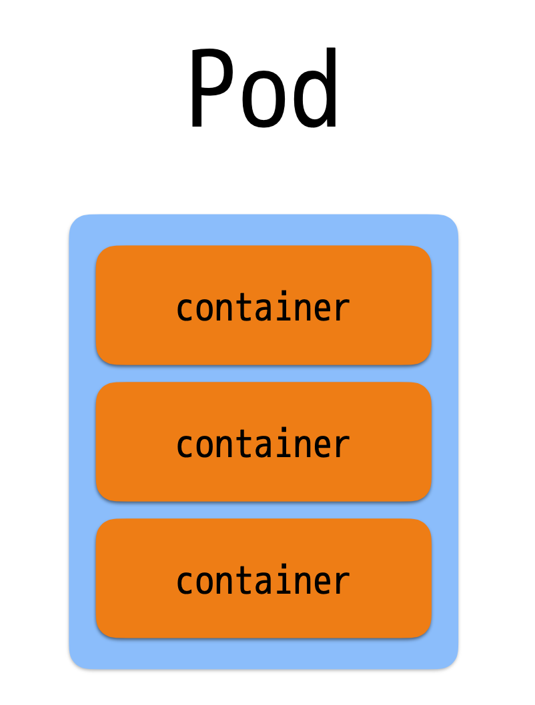
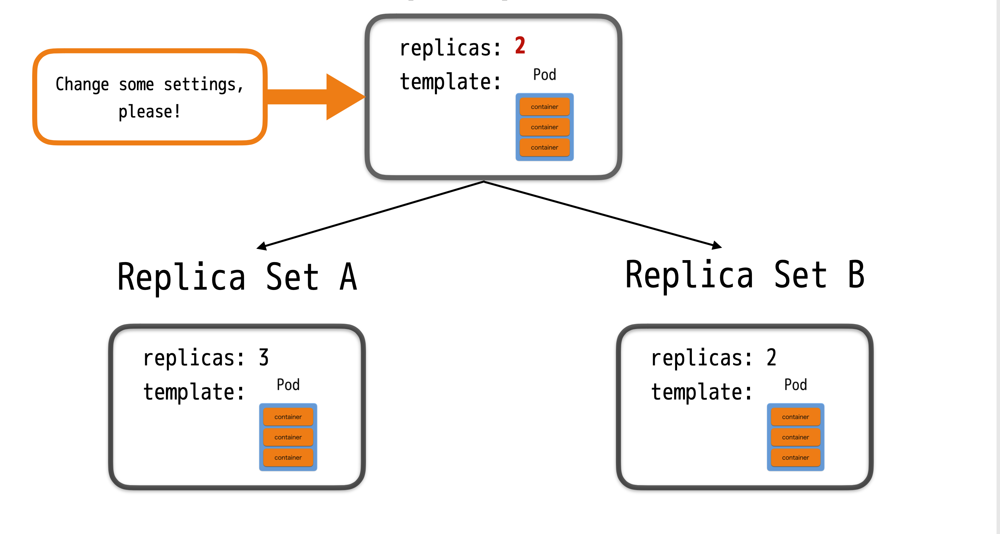
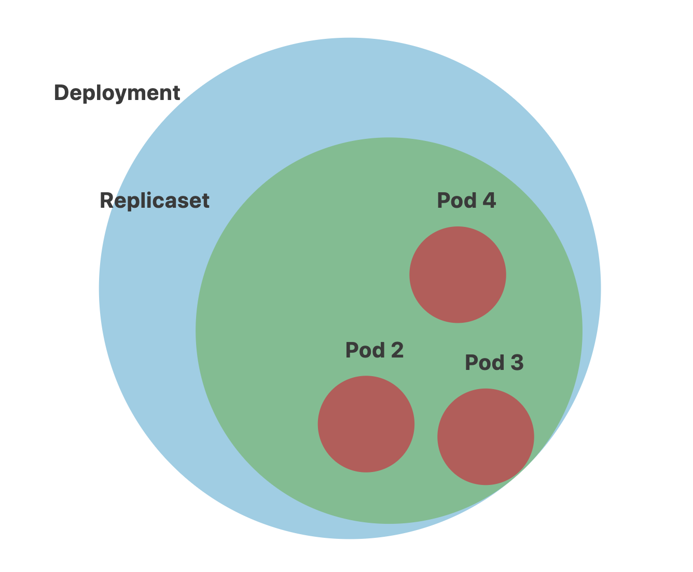

class: center, middle # Kubernetes in X minutes --- ## Start from an real example --- ## Back in time - Container deployment era: Containers are similar to VMs, but they have relaxed isolation properties to share the Operating System (OS) among the applications. Therefore, containers are considered lightweight. --- class: center, middle <span class="center"> </span> ## Docker separate your applications from your infrastructure so you can deliver software quickly --- class: center, middle <span class="center"> </span> ## Compose defining and running multi-container Docker applications. With Compose, you use a YAML file to configure your application’s services. --- class: center, middle <span class="center"> </span> ## Swarm Clustering and Discovery --- ## Kubernetes <img src="./k8s.png" alt=""> --- ## Kubernetes provides - Service discovery and load balancing Kubernetes can expose a container using the DNS name or using their own IP address. If traffic to a container is high, Kubernetes is able to load balance and distribute the network traffic so that the deployment is stable. - Self-healing Kubernetes restarts containers that fail, replaces containers, kills containers that don’t respond to your user-defined health check, and doesn’t advertise them to clients until they are ready to serve. - Automated rollouts and rollbacks You can describe the desired state for your deployed containers using Kubernetes, and it can change the actual state to the desired state at a controlled rate. For example, you can automate Kubernetes to create new containers for your deployment, remove existing containers and adopt all their resources to the new container. --- ## Kubernetes provides you with: - Storage orchestration Kubernetes allows you to automatically mount a storage system of your choice, such as local storages, public cloud providers, and more. - Automatic bin packing You provide Kubernetes with a cluster of nodes that it can use to run containerized tasks. You tell Kubernetes how much CPU and memory (RAM) each container needs. Kubernetes can fit containers onto your nodes to make the best use of your resources. - Secret and configuration management Kubernetes lets you store and manage sensitive information, such as passwords, OAuth tokens, and SSH keys. You can deploy and update secrets and application configuration without rebuilding your container images, and without exposing secrets in your stack configuration. --- ## Kubernetes Architecture <img src="./Chart_02_Kubernetes-Architecture.png"> --- ## Kubernetes Architecture <img src="./Chart_03_Kubernetes-Master.png" > --- ## Kubernetes Architecture <img src="./Chart_04_Kubernetes-Node.png" > --- ## Lookback: Web Deployment Configuration ```yaml Hello: World ``` --- ## Pod: Basic unit of deployment in k8s <span class="center"> </span> --- ## Pod: Basic unit of deployment in k8s <span class="center"> </span> --- ## Pod: Basic unit of deployment in k8s <span class="center">  </span> --- ## Pod: Basic unit of deployment in k8s <span class="center"> </span> --- ## Node Depends on each node’s resource availability and each pod’s resource requirements --- ## Node Depends on each node’s resource availability and each pod’s resource requirements --- ## Replica Set: Keeps track of pod replicas --- ## Replica Set: Keeps track of pod replicas --- ## Replica Set: Keeps track of pod replicas --- ## Replica Set: Keeps track of pod replicas --- ## Deployment: Manages Replica Set state transitions <span class="center"> </span> --- ## Deployment: Manages Replica Set state transitions <span class="center"> </span> --- ## Deployment: Manages Replica Set state transitions <span class="center"> </span> --- ## Deployment: Manages Replica Set state transitions <span class="center">  </span> --- ## Deployment: Manages Replica Set state transitions <span class="center"> </span> --- ## Deployment: Manages Replica Set state transitions <span class="center"> </span> --- ## Deployment: Manages Replica Set state transitions <span class="center"> </span> --- ## Deployment: Manages Replica Set state transitions <span class="center"> </span> --- ## Deployment: Manages Replica Set state transitions <span class="center"> </span> --- ## Deployment: Manages Replica Set state transitions <span class="center"> </span> --- ## Deployment: Manages Replica Set state transitions <span class="center"> </span> --- <span class="center">  </span> # Deployments create ReplicaSets that create Pods. --- ## Servicves: logical set of pods and ways to access from outer world <span class="center"> </span> --- ## Servicves: logical set of pods and ways to access from outer world <span class="center"> </span> --- ## Servicves: logical set of pods and ways to access from outer world <span class="center"> </span> --- ## Servicves: logical set of pods and ways to access from outer world <span class="center"> </span> --- ## Servicves: logical set of pods and ways to access from outer world <span class="center"> </span> --- ## Servicves: logical set of pods and ways to access from outer world <span class="center"> </span> --- ## Servicves: logical set of pods and ways to access from outer world <span class="center"> </span>